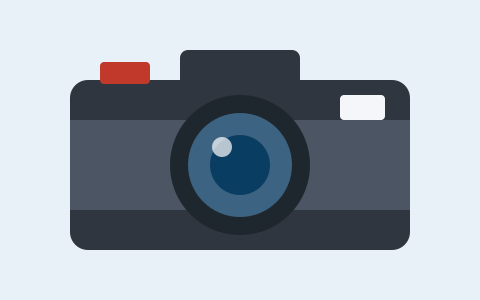

Усе почалося зі старого плівкового фотоапарата, який я знайшов у шафі в бабусі. Мені стало цікаво, як він працює, і я купив першу плівку. Перші кадри вийшли розмитими, але саме тоді я зрозумів, що хочу навчитися знімати по-справжньому.
Зараз я фотографую переважно на телефон і цифрову камеру. Найбільше люблю вуличну фотографію та пейзажі — особливо ранкове світло біля річки.
Корисні уроки та приклади світлин можна знайти на сайті Unsplash, а пояснення про експозицію — у Вікіпедії.